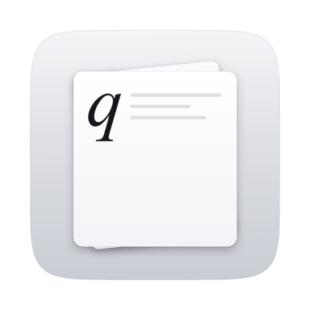

按真实尺寸排版
页面就是屏幕，页面上的 10.5 磅，就是笔尖下真实的 10.5 磅。
- QUADERNO A5 显示区实测值：156.97 × 209.30 mm、227.18 ppi
- 字体、字号、页边距与行距可调，并可逐页预览
- pandoc → Typst → PDF；两个排版引擎都打包在 App 内
- A4（FMVDP41）修改两个参数后即可使用

Mac 上的 QUADERNO 文件投递与电子书排版工具
从 Mac 上的文字，到 QUADERNO 上的一页。合宜的字体、真实的尺寸，让阅读回到从容。
版本 1.3.0 · 免费、开源（MIT）。需要 Apple Silicon 芯片、macOS 14 或更新版本。
过大的页面放到电子纸上，文字容易显得细小。TrueScale 为文本、Markdown 与 EPUB 按阅读页面排版；现有 PDF 则保留原版式直接投递。
由 1404 × 1872 像素和 10.3 英寸对角线推算（227.18 dpi，与公布的 227 dpi 相差 0.08%），再用直尺验证：屏幕上一条 100 mm 的线，量出来正好 100 mm。
页面就是屏幕，设备原样显示。页面上的 10.5 磅，就是笔尖下真实的 10.5 磅，和印刷书里一样大。
投递的文件都保存到设备的 Received，并在屏幕上打开。设备上的任何文件都不会被覆盖。
复制任意文字或 Markdown，按 ⌃1。自动命名、排版、投递，约两秒。
对 PDF、EPUB、Markdown 或文本文件选择「投递到 QUADERNO」，可以多选，不弹出窗口。
EPUB、MOBI、FB2、HTML 和微信公众号文章，带目录与书签。
按 ⌃2 或点一下，保存设备屏幕（包括手写笔迹），格式可选 PNG、JPEG 或实际尺寸的 PDF，存进预先选好的文件夹。
直接和设备通信，不需要打开 QUADERNO PC App。
每次上传后都会读回文件、核对 SHA-256，确认无误才算送达。
配对时固定设备公钥；换了公钥的设备会被拒绝，不会被信任。
浏览、搜索、连同手写批注下载、上传、移动、删除——删除前一定会确认。
所有入口的每一次投递。失败的保留 PDF，一键重试。
App 与通知都有三种语言，可在设置中切换。
所有入口共用同一条排版与投递链路。下面是完整的功能清单，包含新增的表格与富文本保真处理。
页面就是屏幕，页面上的 10.5 磅，就是笔尖下真实的 10.5 磅。
短笔记、整本书、网页文章，走同一条链路。
从 AI 回复或网页复制的内容，结构不会散掉。
终点是设备本身，官方客户端只是可选项。
设备里已有的内容同样可以操作。
原生 macOS 应用，同时保留命令行入口。
官网更新与 App 发行记录，按时间倒序排列。 在 GitHub 查看完整变更日志
关于尺寸、兼容性、支持的内容来源与投递安全的简要回答。
A4 或 Letter 页面缩放到 QUADERNO A5 时，文字往往会变小。TrueScale 可以为文本、Markdown 与 EPUB 按目标阅读页面重新排版。已有 PDF 保留原版式投递；当前发行版尚不支持自动提取 PDF 正文并重排。
可以。TrueScale 通过 USB 或局域网的 HTTPS 直连设备，配对信息从官方 App 一次性导入，之后官方客户端无需运行。若上传开始前直连不可用、且官方 App 正在运行，会自动降级到它的打印队列。
剪贴板纯文本、Markdown 与富文本 HTML；Finder 中的 PDF、EPUB、MOBI、FB2、HTML、TXT；粘贴微信公众号文章链接；以及 App 内直接输入。AI 回复中的表格会从 HTML、TSV 或 GFM 管道表格归一化，保留列宽与对齐。微信公众号提取全程在本机完成。
10.3 英寸对角线、1404 × 1872 像素、227.18 ppi，显示区 156.97 × 209.30 mm。用直尺量屏幕上 100 mm 的线，结果正好 100 mm。可下载的校准页让你在任何阅读器上验证同样的 1:1 行为。
A4 可用，但页面尺寸仍是推导值、尚未实测，使用前需改两个参数。预编译包仅支持 Apple Silicon 与 macOS 14 或更新版本；Intel Mac 可从源码按本机架构构建。不支持 Windows。
不会。文件只写入 Document/Received/ 并在屏幕上打开。移动与删除只在「设备文件」里由你明确操作且二次确认。每次上传都会从设备回读并核对 SHA-256，通过后才算送达。
免费、开源，采用 MIT 许可。TrueScale for QUADERNO 是独立项目，与富士通没有关联，也未获得其认可或赞助。FUJITSU 与 QUADERNO 是其各自权利人的商标。
我们欣赏它克制的工业设计，让信息技术恰当地服务于阅读、书写与思考。TrueScale 希望延续这种理念，让数字内容以适合纸页的方式呈现。